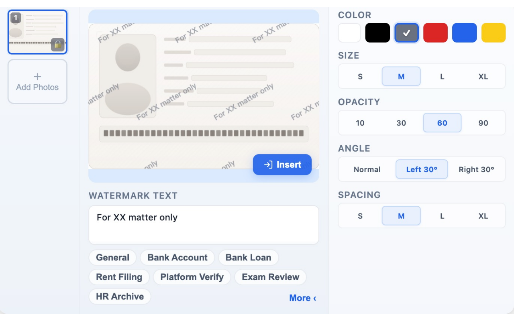

Add semi-transparent watermarks to ID and document photos — all processing stays local in your browser
⬇ Download v1.0.1Select multiple images and add watermarks in one go, saving you time
Adjust text, color, size, angle, opacity, and spacing to your needs
Built-in presets for banking, rental, exams, and other common scenarios
Auto-detects upload buttons on web pages, insert watermarked images inline
Lock selected images to prevent accidental deletion
All image processing happens locally — zero data leaves your browser

All image processing happens locally in your browser — nothing is uploaded to any server.
No personal data collected. No third-party tracking.